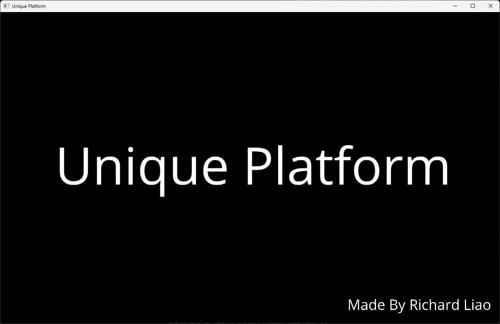
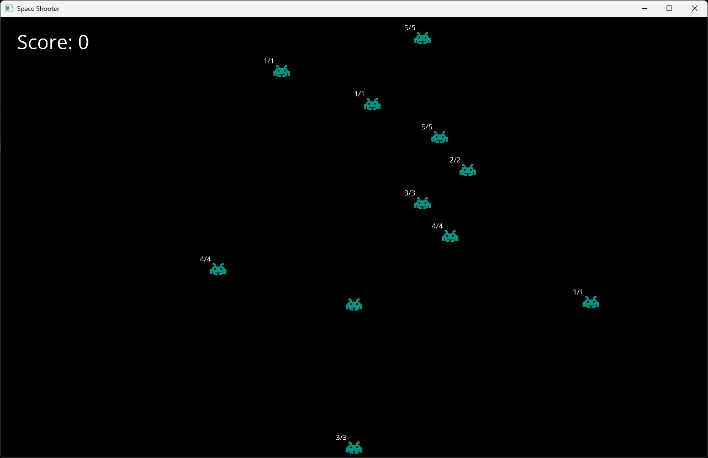
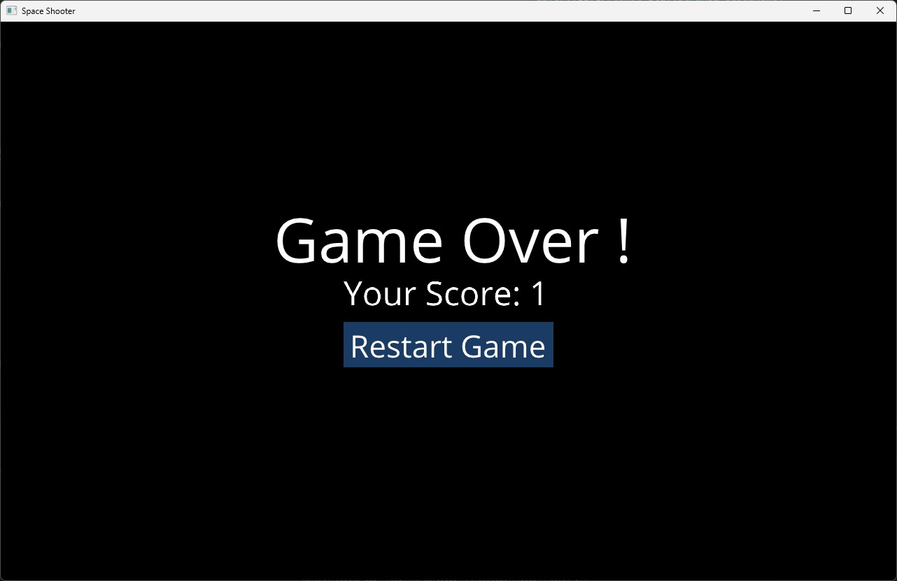

Unique Platform

Platform Start Screen

Space Shooter Game Screen

Space Shooter Game Over
Visit the GitHub Project
Project Overview:
Developed a versatile 2D game engine and accompanying platform in C++, incorporating SFML for graphics and
ImGui for user interfaces. The platform currently runs a Space Shooter game, showcasing the engine’s robust
capabilities.
Objective:
To gain a deeper understanding of game engine construction and to advance my C++ skills, focusing on core
functionalities and planning to enhance graphic rendering with OpenGL.
Development Breakdown:
- Phase 1 - Engine and Platform Development:
- Implemented foundational graphics rendering, input management, and dynamic UIs.
- Created a game platform that supports game launching, progress tracking, and score
management.
- Phase 2 - Ongoing:
- Developing an advanced rendering system using OpenGL to improve visual performance.
Challenges and Solutions:
1. Integration of SFML and ImGui
Problem
Integrating SFML and ImGui posed significant challenges due to their distinct rendering
processes and lifecycle management. The primary issue was ensuring that the rendering
and event handling of both systems did not interfere with each other.
Solution
I developed a multi-layer rendering system within our game engine that manages different
rendering layers independently. This approach allows SFML and ImGui to function
seamlessly without compromising performance or complexity.
Technical Implementation
- LayerStack Management: Introduced a LayerStack class to control the order of rendering
and
event propagation across different layers, enhancing flexibility.
- Event Dispatching: Implemented an event dispatcher to handle and route events
efficiently,
tailored to the needs of different layers.
- Consistent Timing: Utilized a timing mechanism to maintain consistent game speed across
varying processing rates.
2. Custom Renderer for Future Graphics API Transition
Problem
While SFML is great for rapid development and 2D graphics, its capabilities are limited for
advanced 3D rendering. Anticipating the need for enhanced graphics performance, a transition to
a more powerful graphics library like OpenGL was considered essential.
Solution
I designed a custom renderer with an abstract interface layer between SFML and the game logic.
This abstraction facilitates easy swapping of the rendering technology without affecting the
rest of the application.
Technical Implementation
- Abstract Rendering Interface: Defined a set of rendering operations that encapsulate all
graphics activities, making the underlying graphics library easily interchangeable.
- Flexibility for Future Upgrades: The design allows straightforward integration of OpenGL or
other rendering technologies by merely adapting the rendering layer.